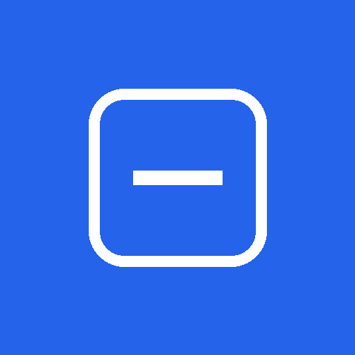

Đang kết nối EduScan
Máy chủ có thể đang khởi động lại sau thời gian không dùng, việc này mất khoảng một phút.
Không kết nối được máy chủ
Kiểm tra kết nối Internet rồi thử lại. Nếu vẫn lỗi, máy chủ có thể đang bảo trì.

Máy chủ có thể đang khởi động lại sau thời gian không dùng, việc này mất khoảng một phút.
Kiểm tra kết nối Internet rồi thử lại. Nếu vẫn lỗi, máy chủ có thể đang bảo trì.